3papers+1patent
Research and IP
Medical AI, healthcare economics, and a contactless computer-vision patent.
Open research work ↘I enjoy finding the story inside the numbers, shaping insights into action, and bringing a thoughtful, people-first lens to every problem I solve.
I work best with people who ask thoughtful questions, challenge assumptions, and care about getting the answer right. I bring structure to ambiguity, make the business story easy to follow, and keep the team focused on the decision that matters.
Whether I am analyzing data, facilitating a conversation, or presenting a recommendation, I care about clarity, empathy, and practical impact.
Medical AI, healthcare economics, and a contactless computer-vision patent.
Open research work ↘
One intense year, countless models, and a degree worth celebrating.
View credentials ↘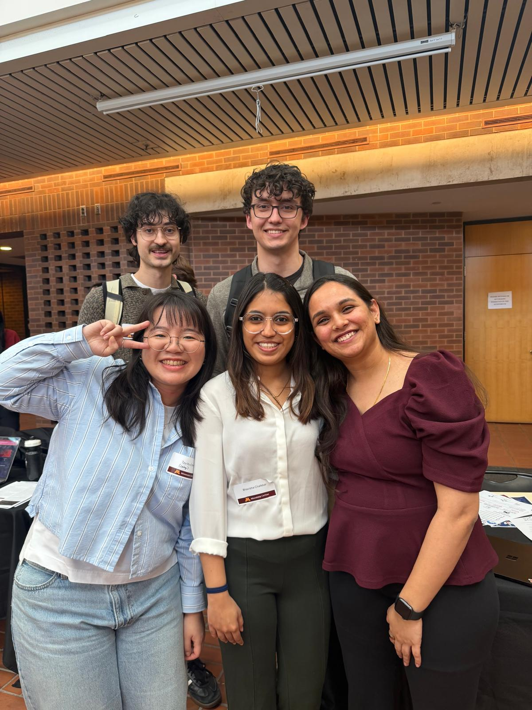
Judges’ & Instructor’s Favorite at the Big Data & AI Trends Market 2026.
See the project story ↘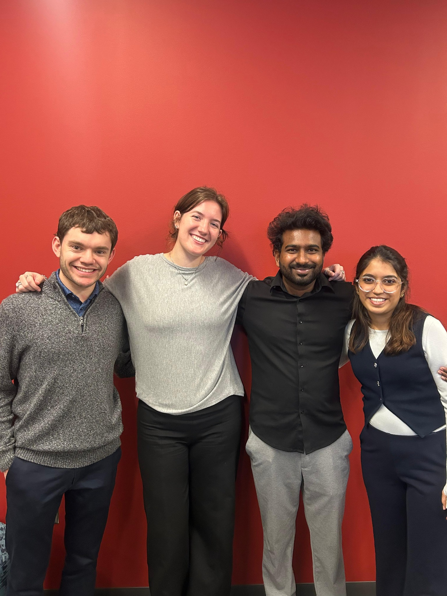
A real client challenge, a sharp team, and a runner-up finish.
See the client case ↘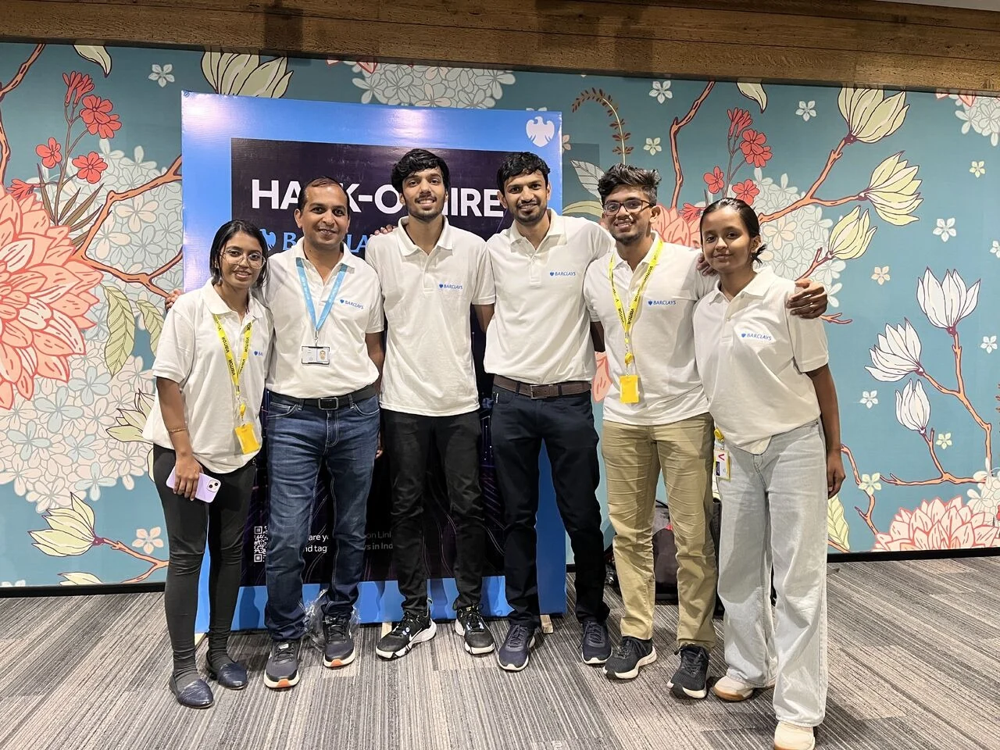
A fast build, a strong team, and a Top 5 finish in India.
See the competition story ↘Worked across client questions in transportation reliability, bid performance, pricing, and operations, then translated the analysis into recommendations teams could act on.
Supported students in Science of Food & Cooking labs, clarified technical concepts, guided activities, and helped create an organized and encouraging learning environment.
Supported recurring reporting and decision support for financial institutions through SQL extraction, reconciliation, Power BI dashboards, Excel analysis, and root-cause investigation.
Analyzed sustainability communication across BSE-100 companies using NLP, disclosure data, and structured validation to surface themes and reporting patterns.
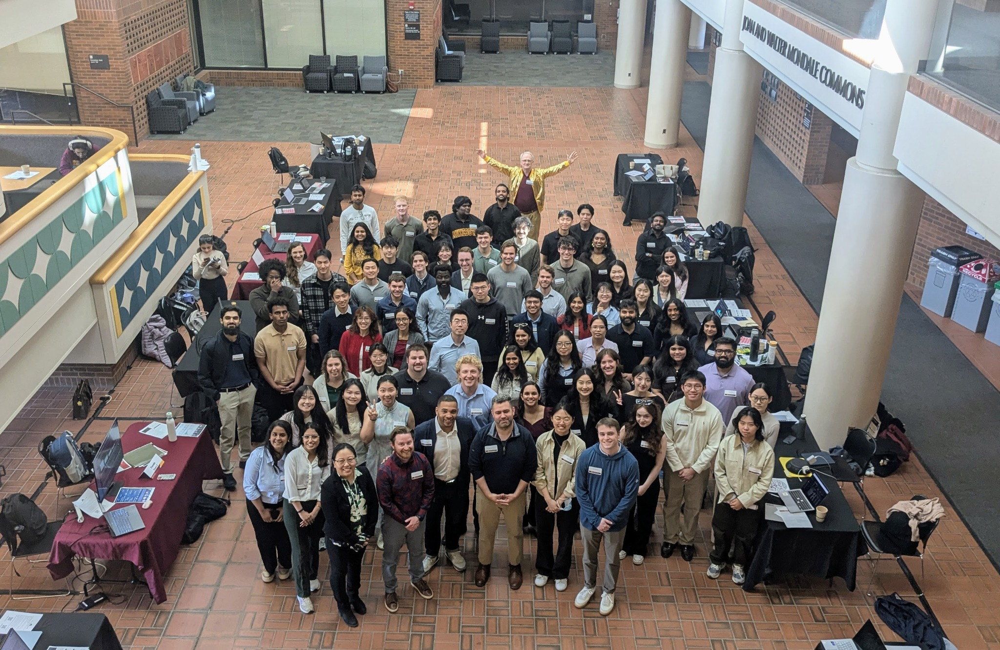
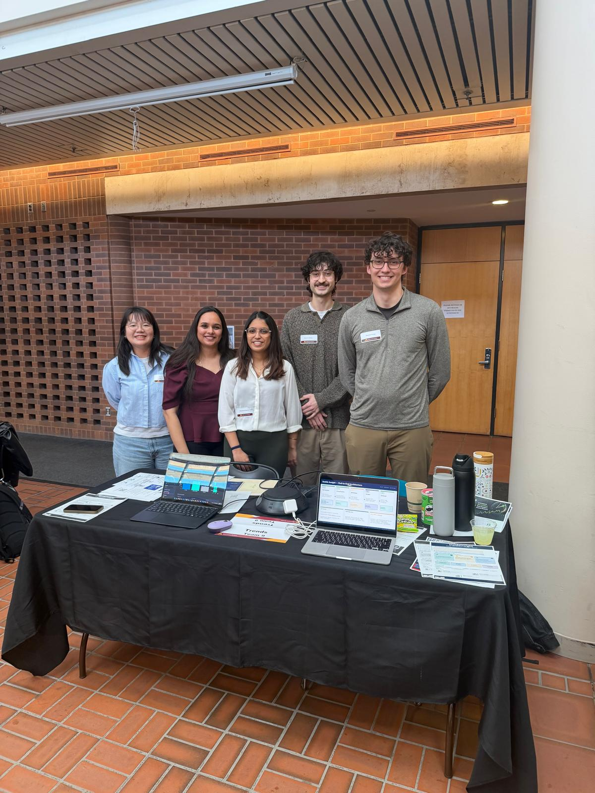
Built an Airbnb pricing intelligence product that turned messy listing data into clearer pricing decisions.
Story in the data Comparable listings still carried meaningful pricing gaps, making neighborhood, room type, and review signals central to the recommendation.
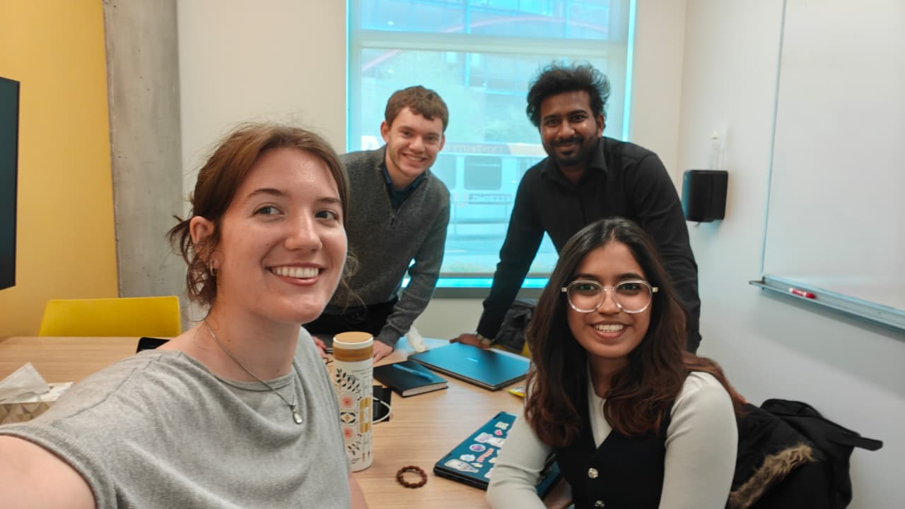
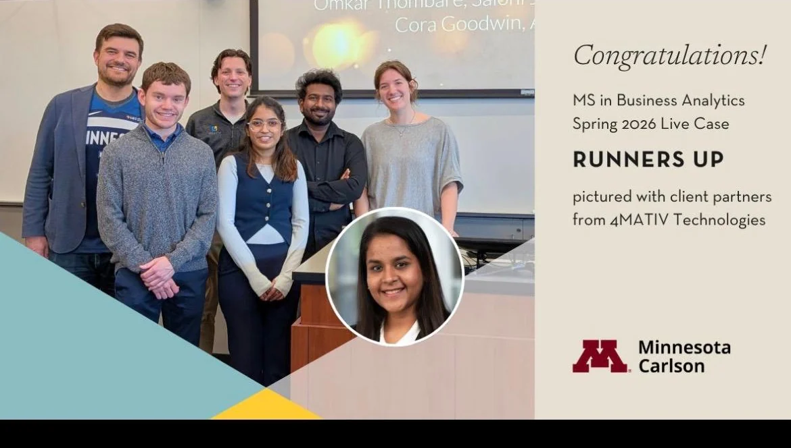
Took on a real transportation reliability challenge, built the case with my team, and finished runner-up.
Story in the data Nearly half of the trips fell into low-confidence territory, showing that reliability was a vendor and route pattern, not a handful of isolated misses.
Synthesized bid records to surface pricing gaps, regional hotspots, seasonal patterns, and roadmap priorities.
Story in the data Lost bids clustered in central-western Minnesota and North Dakota, especially in high-material bins, pointing to targeted pricing and process fixes.
Developed a six-model ensemble and translated predictive performance into a retention strategy.
Story in the data Churn risk was concentrated enough to support targeted retention offers instead of spreading incentives across the entire customer base.
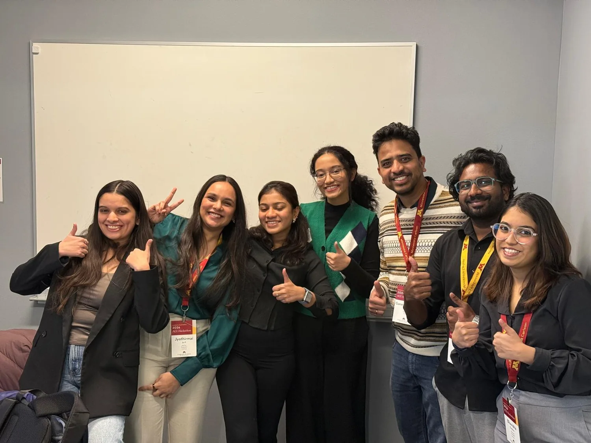
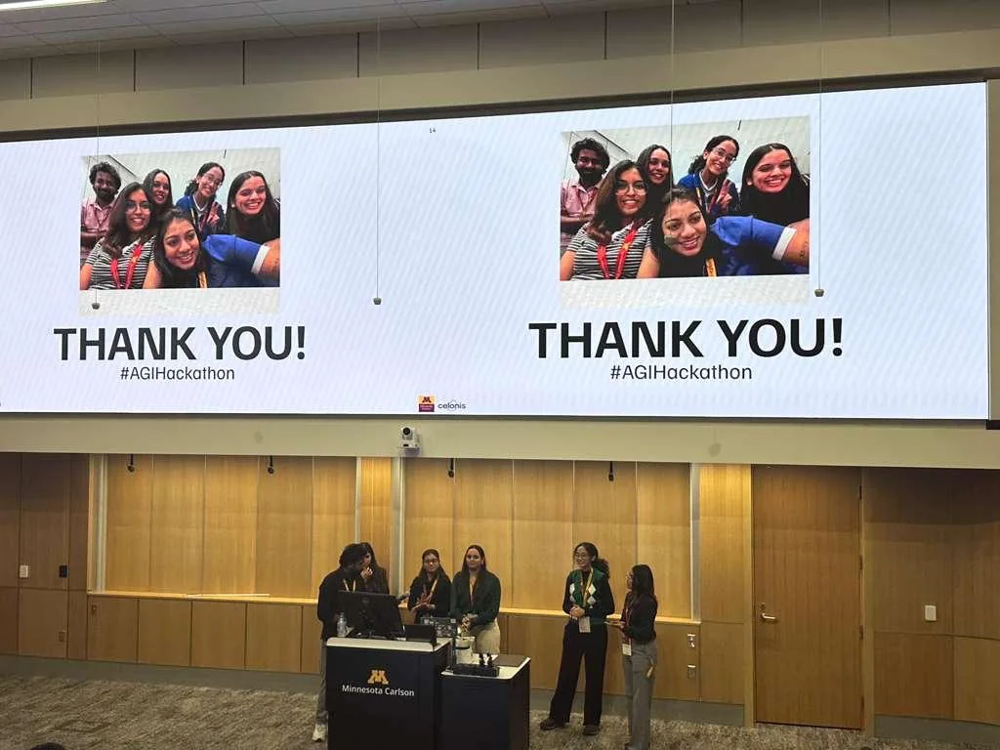
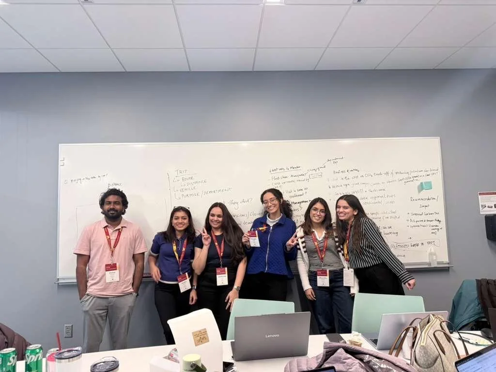
Modeled an emissions-reduction framework and AI-driven behavioral nudges for corporate travel.
Story in the data Travel class mattered. First-class trips produced nearly twice the emissions of economy, revealing a clear lever for smarter travel nudges.
Designed a multilingual document-intelligence product for cross-border trade workflows.
Story in the data The bottleneck was not one document. It was the mix of formats, languages, and handoffs across the trade workflow.
Designed an NLP ticket-routing solution and operational dashboards for faster issue resolution.
Story in the data Support issues could be grouped by recurring intent, making better routing more valuable than treating every ticket as a brand-new problem.
Investigated whether high Medicare spending was driven more by care intensity or visit frequency.
Story in the data Just 3.1% of beneficiaries accounted for 46.7% of spending, with episode intensity emerging as the stronger cost driver.
Developed a multimodal medical imaging framework and published a labeled OCT-Fundus dataset.
Story in the data OCT and fundus images carried complementary signals, so combining them captured disease patterns that one modality could miss.
Applied deep learning methods to multi-class lung cancer classification from medical imaging data.
Story in the data The challenge was not simply detecting disease. It was separating cancer types with visually similar imaging patterns.
Proposed a hybrid VGG16-CNN approach for improving fracture detection on X-ray datasets.
Story in the data Subtle fracture cues are easy to overlook, which made transfer learning useful for surfacing patterns hidden in the X-rays.
Filed a patent for a dual-authentication, contactless attendance system using computer vision.
Design insight One identifier was not enough, so the system paired two contactless checks to make attendance verification harder to spoof.
Tools and methods selected to serve the decision, not to impress the dashboard.
Data preparation, KPI design, statistical testing, visualization, and executive reporting.
Data pipelines, predictive modeling, NLP, agentic workflows, and practical AI product design.
Structured thinking, stakeholder alignment, impact sizing, and recommendation development.
University of Minnesota, Carlson School of Management
Sardar Patel Institute of Technology
Art slows me down, food gives me excellent reasons to explore, and small moments usually become the best stories.
Sketching is where I swap dashboards for details and let patience do the talking.
Good coffee, sweet finds, and the tiny moments that make an ordinary day feel special.
My first team, my loudest cheerleaders, and the people who keep every win grounded.
They are generous with morale and ruthless about snack quality.
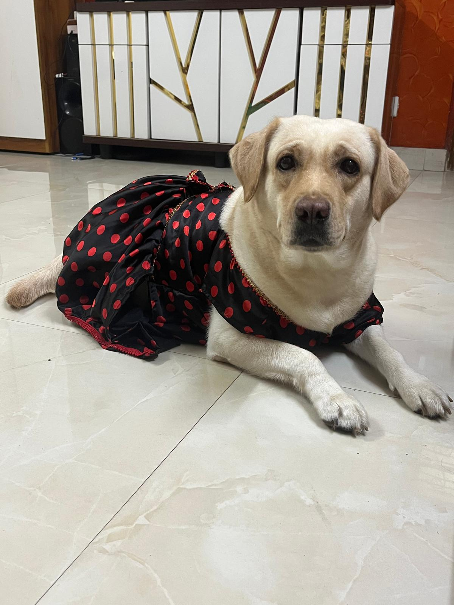
I am interested in full-time opportunities across business analytics, data analytics, strategy, decision support, and AI-enabled operations.